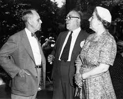

In 1926 Wiener married Margaret Engemann, an assistant professor of modern languages at Juniata College.[citation needed] They had two daughters.[citation needed] Opinions are not all positive on Margaret's impacts on Wiener's career.Wiener was born in Columbia, Missouri, the first child of Leo Wiener and Bertha Kahn, Jewish immigrants from Poland and Germany, respectively. Through his father, he was related to Maimonides, the famous rabbi, philosopher and physician from Al Andalus, as well as to Akiva Eger, chief rabbi of Posen from 1815 to 1837.
Wiener died in March 1964, aged 69, in Stockholm, from a heart attack. Wiener and his wife are buried at the Vittum Hill Cemetery in Sandwich. 1903, employing teaching methods of his own invention, except for a brief interlude when Norbert was 7 years of age. Earning his living teaching German and Slavic languages, Leo read widely and accumulated a personal library from which the young Norbert benefited greatly. New Hampshire.